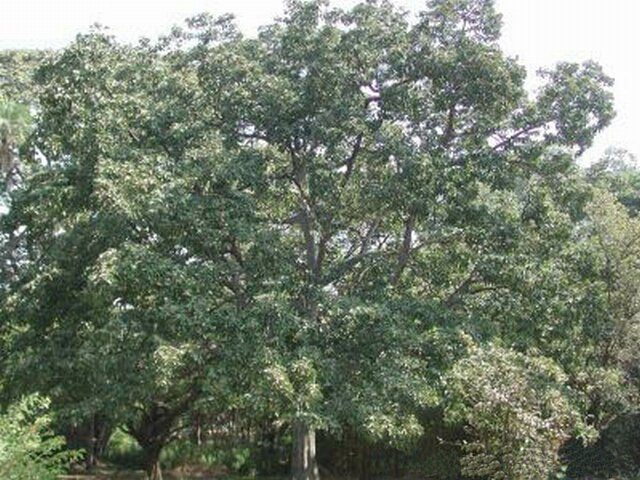

बहेड़ाBahera
Terminalia bellirica · Combretaceae · FLR-0124

- Scientific name वैज्ञानिक नाम
- Terminalia bellirica (Gaertn.) Roxb.
- Family कुल
- Combretaceae
- Hindi हिंदी
- बहेड़ा
- Local names स्थानीय नाम
- bahera, baheda, bahira, bibhitaki, baheda phal
- Status here यहाँ की स्थिति
- native
- Movement आवागमन
- Resident, here all year
- IUCN IUCN
- not evaluated
- Review समीक्षा
- audited and independently read
When to look कब देखें
Present all year. साल भर मौजूद।
Uses and possibilities उपयोग और संभावनाएँ
“Traditional medicine” means a documented traditional use, not a claim that it works. Nothing on this page is medical advice.
Drawn from the documented uses in the profile below, where each is labelled traditional, current or a research lead. All uses →
Tell it apart from इनसे अलग पहचानें
बहेड़ा / Bahera
Terminalia bellirica (Gaertn.) Roxb. — Combretaceae
बहेड़ा — पेड़ जिसके फल गहरे भूरे रंग के, सूखे, और कड़े होते हैं, जिनके किनारों पर पंखनुमा डैने होते हैं। आयुर्वेद की "त्रिफला" चूर्ण में यह एक प्रमुख घटक है। पेड़ गरमी में पत्ते झाड़ देता है और अप्रैल में सफेद-पीले छोटे फूलों के क्लस्टर में खिलता है। इसकी लकड़ी मजबूत, टिकाऊ, और गाड़ी बनाने में काम आती है। बहेड़े के फलों को सूखाकर बाज़ारों में बेचा जाता है।
Quick Identification त्वरित पहचान
| Feature | Description |
|---|---|
| Size | Large deciduous tree, 15–25 m, with a spreading crown |
| Leaves | Simple, alternate, elliptic to obovate, 10–20 cm, entire margins, clustering at twig ends |
| Flowers | Small, greenish-white, clustered in narrow spikes at branch tips, March to April |
| Fruits | Ellipsoid to obovoid, hard, grey-brown drupes, 3–4 cm, with two prominent wings; ripens September to October |
| Bark | Dark grey, deeply furrowed |
| The test | Look for a large tree with winged fruit clusters and leaves bunched at the twig ends |
Field tip: In a dry grove in April, look for a large leafless tree with small white clusters of flowers; in September, for a tree heavy with grey-brown, hard, winged fruits. The fruit shape and wings are distinctive.
हिंदी — कैसे पहचानें: बड़ा पेड़, गरमी में सब पत्ते झाड़ा हुआ, फूल सफेद, फल भूरे-सूखे डैनों वाले।
Morphology आकारिकी
Biometrics (northern Indian populations):
| Measurement | Range |
|---|---|
| Height | 15–25 m |
| Trunk diameter | 60–150 cm |
| Leaf length | 10–20 cm |
| Leaf width | 5–10 cm |
| Fruit length | 3–4 cm |
| Fruit width (with wings) | 4–5 cm |
Trunk and bark: Massive, straight; dark grey, deeply fissured bark. Wood hard, moderately durable, yellowish-brown, used for carts and implements.
Leaves: Simple, alternate, clustered at the ends of twigs (a characteristic of Terminalia), elliptic to obovate, tapering at the base, entire margins, dull green above.
Flowers: Small, 4–5 mm, greenish-white, in dense, narrow spikes at the branch tips.
Fruits: Dry, hard drupes, ellipsoid, grey-brown, with two or three prominent papery wings that aid in wind dispersal.
हिंदी: पत्तियाँ शाखाओं के सिरों पर गुच्छों में; फूल सफेद-हरे, स्पाइक में; फल डैनों वाला।
Behaviour & Ecology व्यवहार और पारिस्थितिकी
A tree of dry deciduous forest, drought-tolerant and deep-rooted; found on well-drained soils and laterite plateaus. The tree is deciduous and leafless for several months, flowering in early summer and fruiting in autumn. The winged fruits are dispersed by wind; the hard seed coat ensures dormancy through the dry season. The tree is a slow grower but long-lived.
Wildlife makes minimal use of the fruit for food, but the tree's association with mycorrhizal fungi may benefit understory plants.
हिंदी: सूखे की सहनशील; गहरी जड़ें। फल हवा से दूर जाते हैं। धीरे-धीरे बढ़ता है पर लंबा जीता है।
Life Cycle / Phenology जीवन चक्र
| Month / season | Event |
|---|---|
| January–February | Leaf fall begins; bare tree |
| March–April | Flowering on leafless branches |
| May–August | New leaves; fruit sets; monsoon growth |
| September–October | Fruit ripens; drupes dry and fall |
| Maturity | Fruiting begins at 10–12 years |
हिंदी: गरमी में सब पत्ते, अप्रैल में फूल, सितंबर-अक्टूबर में फल।
Associated Species / Interactions संबंधित प्रजातियाँ
- Forest associates: Arjun Tree, Amaltas, in dry deciduous forest.
- Ethnobotanical associates: Haritaki, Indian Gooseberry — the other members of the tri-fruit combination in Ayurveda.
Pests and Diseases कीट और रोग
- Leaf-eating beetles and caterpillars during the monsoon.
- Generally resistant to pests and diseases.
Agricultural / Human Relevance कृषि प्रासंगिकता
Traditional and Ethnobotanical Use (documented uses; not medical advice):
- Fruit. Listed in Kirtikar & Basu and Ayurvedic texts as one of the three fruits (tri-phala) used for digestive and general health support. The dried fruit is sold in bazaars and used for medicinal preparations.
- Timber. Hard, strong wood used for carts, implements, and construction.
- Tanning. The fruit contains tannins and is used in leather processing.
Today. The dried fruit is traded; Ayurvedic preparations containing bahera are widely available.
Research direction (a lead, not a result). The medicinal compounds in the fruit (tannins, ascorbic acid) have been isolated; clinical validation of traditional preparations is ongoing in published literature.
हिंदी: त्रिफला का एक हिस्सा; फल सूखाकर दवा बनती है। लकड़ी गाड़ी का हिस्सा। चमड़े को रंग देने में।
Expected Locally स्थानीय रूप से अपेक्षित
Not a field record. Written from published accounts for eastern Uttar Pradesh. No confirmed local sighting yet — if you have seen it, that is what the atlas needs.
अभी तक स्थानीय पुष्टि नहीं। यह विवरण प्रकाशित स्रोतों से है, किसी अवलोकन से नहीं।
To be expected in dry deciduous woodlands and village groves across Basti and Ayodhya districts.
Distribution वितरण
Global range: Native to South Asia, from Pakistan through India to Sri Lanka.
In India: Widespread in the peninsula and the Gangetic plain in deciduous forest.
In Uttar Pradesh: Common in dry forest areas.
In Basti district / eastern UP: Expected in village groves and dry forest remnants.
Research Questions शोध प्रश्न
Anyone can investigate these | कोई भी इन प्रश्नों की जाँच कर सकता है
- How many bahera trees are left in your village groves? / आपके गाँव के बाग़ों में कितने बहेड़े के पेड़ हैं? — Count and record approximate age.
- How far do the winged fruits travel from the parent tree? — Collect seedlings at different distances.
- How is the dried fruit used in your community? — Ask women and healers.
- When do the leaves return after they fall? — Visit monthly from January to June.
- Do any old bahera trees still provide fruit in quantity? — Estimate fruit yield from a mature tree.
Similar Species मिलती-जुलती प्रजातियाँ
| Species | How to tell apart | हिंदी |
|---|---|---|
| Arjun Tree (Terminalia arjuna) | Similar; leaves in clusters; fruit has four wings; grows on riverbanks | चार डैने की फली, नदी के किनारे |
| Amaltas (Cassia fistula) | Smaller tree; leaves compound; fruit pods long, round, black, smooth | कटी-फटी पत्तियाँ, काली लंबी फली |
| Ber (Ziziphus mauritiana) | Smaller; thorns on branches; fruit small, reddish, sweet, edible | कांटे, छोटे मीठे लाल फल |
Field rule: A large tree with leaves bunched at twig ends, hard winged grey-brown fruits, and leaflessness in April is bahera.
Taxonomy & Classification वर्गीकरण
Original description. Originally described by Joseph Gaertner as Myrobalanus bellirica in De Fructibus (1788). Transferred to Terminalia by Roxburgh in 1814. The epithet bellirica refers to the myrobalan fruit.
Subspecies. Monotypic — no subspecies are currently recognised.
Family and order placement. Combretaceae, order Myrtales. Terminalia is a tropical genus of about 150 species.
Phylogenetic notes. Within the Combretaceae, Terminalia is characterized by the clustered leaves at twig ends and the winged fruits.
IUCN status rationale. Not evaluated. Populations stable in protected forest areas.
Photo Gallery फोटो गैलरी
Photos needed आवश्यक फोटो
- [ ] Whole tree in dry season, leafless (पूरा पेड़)
- [ ] Flowering branch in April (फूल)
- [ ] Mature fruits on the tree (फल)
Atlas Connections संबंधित प्रजातियाँ
- Arjun Tree — the other Terminalia; compare the fruit wings
- Haritaki and Indian Gooseberry — the other tri-fruit companions in Ayurveda
- Amaltas — another tree with dry fruit pods
References संदर्भ
- Gaertner, J. (1788). De Fructibus et Seminibus Plantarum, vol. 1, p. 219 (as Myrobalanus bellirica). Stuttgart. [original description]
- Roxburgh, W. (1814). Flora Indica, vol. 2, p. 414. Serampore. [transferred to Terminalia]
- Hooker, J.D. (1875). The Flora of British India, vol. 2. L. Reeve, London. (Terminalia)
- Kirtikar, K.R. & Basu, B.D. (1935). Indian Medicinal Plants, 2nd ed., vol. 1. Lalit Mohan Basu, Allahabad.
- Chopra, R.N., Nayar, S.L. & Chopra, I.C. (1956). Glossary of Indian Medicinal Plants. CSIR, New Delhi.
- Council of Scientific and Industrial Research (1972). The Wealth of India: Raw Materials, vol. 10. CSIR, New Delhi.
- GBIF Occurrence Data — Terminalia bellirica, India (2026).
Source file: species/flora/trees/bahera.md